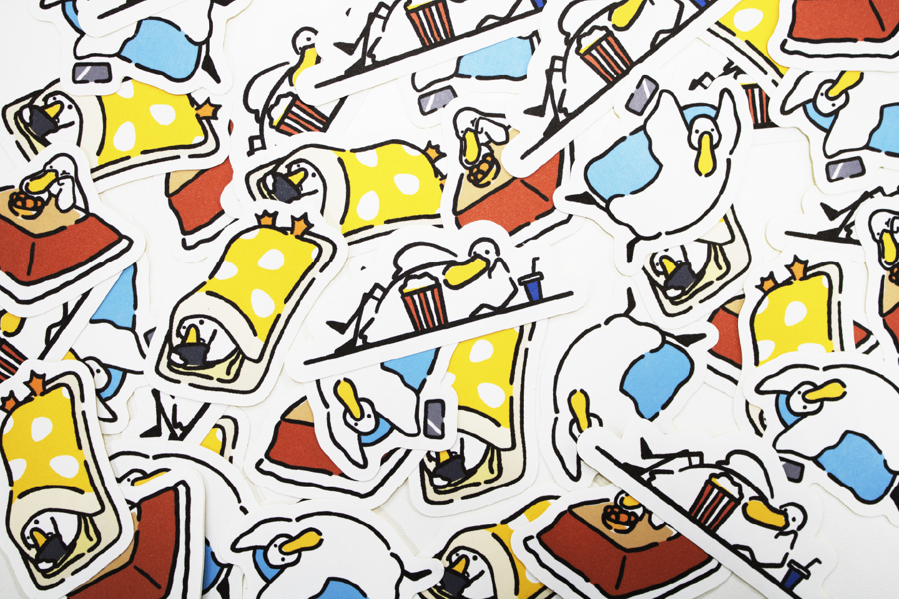

- HOME -
はじめまして、深瀬水月と申します。
大学では主にグラフィックデザインを専攻しており、ロゴやパッケージなどのビジュアル表現に取り組んでいます。「人のために、自分のために。」をポリシーに、誰かの願いを解決するデザインについて日々研究しています。
本サイトでは、それらの作品群の一部を紹介します。
お目通し頂ければ幸いです。


ゴリラ山のバナナオ・レ
宮城県仙台市青葉区作並にある鎌倉山、通称「ゴリラ山」の魅力を伝えるバナナオレのパッケージを制作。
作並温泉にきた観光客をターゲットに、世代問わず親しみやすさを感じられるデザインを意識しています。
第50回工大祭 ロゴデザイン
東北工業大学の文化祭である、工大祭の50周年を記念したロゴデザインの制作を行いました。
テーマ『パレット』に準えて、来場者の方々を明るく迎えるロゴをイメージし、カラフルに仕上げました。
お目通し頂ければ幸いです。


オリジナルキャラクター『ぐだっく』
ぐだっと怠けたアヒルのキャラクター『ぐだっく』を制作しました。
グッズとしてミニステッカーと缶バッチを制作し、マルシェなどの出展イベントでの販売も行いました。